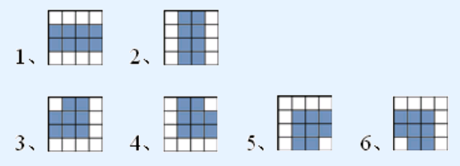

BZPRO
#4261. 建设游乐场
内存限制：256 MiB
时间限制：50 Sec
提交
提交记录
讨论
题目描述
现在有一大块土地，可以看成N*M的方格。在这块土地上，有些格子内是崎岖的山地，无法建造任何东西；其他格子都是平原。现在打算在这块土地上建设一个游乐园。游乐园由若干条闭合的过山车轨道组成，每个平原格子都要铺一截轨道，为下列 6 种类型中的一种：

（每张图表示一块平原格子，图内网格线为辅助线，无实际意义。）
其中前 2 种为直轨道，后 4 种为弯轨道。显然对游客来说，弯轨道更加刺激。
由于每块格子风景各不相同，经过一番研究，现给了N*M个方格中的每个格子一个评估值，意义为：如果该格子修建弯轨道，会给游客们带来多少的愉悦值。现需要一名设计师，帮他设计一种最优的轨道建设方案，使所有格子给游客们带来的愉悦值之和尽量大。（如果没有合法方案，输出 -1）
输入格式
第一行两个正整数 n, m。
接下来 n 行，每行 m 个数，描述了整块土地。其中 1 表示山地，0 表示平原。接下来 n 行，每行 m 个非负整数，第 i 行第 j 个为 Vi,j，表示格子 (i,j) 修建弯轨道能给游客们带来的愉悦值。
输出格式
一行一个数，表示最优设计方案中给游客们带来的愉悦值之和。
样例
样例输入
3 3
1 1 1
1 0 0
1 0 0
48 94 1
78 78 81
1 12 60
样例输出
231
数据范围与提示
N<=150,M<=30,Vi,j<=100